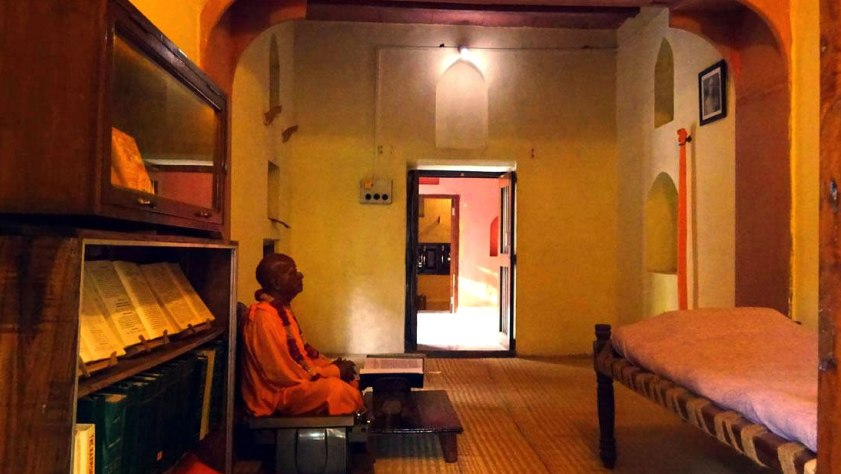

<section class="prabhupad_Room">
  <div class="container">

    <figure class="prabhupad_Room-img">
      
    </figure>

    <div class="room-wapper">
      <div class="more_quotes-slids">
        <span>"</span>
        <strong>In my room at Radha-Damodara you should keep one photo of me, and offer it prasadam of Sri Sri Radha
          Damodara</strong>

      </div>
      <div class="about_room">
        <h5>Srila prabhupada room at Radhadamodar</h5>
        <p>Adjacent to the temple courtyard, it was here that Srila Prabhupada resided in the down stairs in two rooms
          and wrote his first three volumes of Srimad Bhagavatam from 1962 until his voyage to America in 1965. One of
          the rooms, which also overlooked the Samadhi of Srila Rupa Goswami, became his kitchen and the place where he
          honored prashadam while looking out through the latticed window at Rupa Goswami’s samadhi and bhajana kutira.
        </p>
        <p>The other room he used as his bhajana kutira where he chanted japa and spent most of his time translating the
          Shrimad Bhagavatam. Srila Prabhupada accepted the renounced order of life known as tridandi-sannyasa, from his
          dear god-brother Keshava Maharaja at the Gaudiya Matha in Mathura.</p>
        <p>After moving to Radha Damodara and now having taken sannyasa, Srila Prabhupada began formulating his plans of
          traveling to America and establishing a worldwide society of devotees. Srila Prabhupada said that the Radha
          Damodara Mandira was the most important temple in Vrindavana, because it was here that Srila Rupa Goswami
          resided, and where he established his headquarters for preaching the mission of Lord Chaitanya’s.</p>
        <p>With a crate of his English translations of the Shrimad Bhagavatam and just forty rupees in his pocket, Srila
          Prabhupada left the Radha Damodara Mandira in Vrindavan and on the 13TH of August 1965, set sail from the
          Indian port of Calcutta, having obtained a free passage on the Scindia Lines merchant ship jaladuta, bound for
          the United States of America where he arrived on the 17TH September, the rest is now a part of history.</p>
        <p>While residing in his rooms at Radha Damodara, Srila Prabhupada once revealed that both Rupa Goswami and Jiva
          Goswami had appeared to him in dreams, encouraging him to accomplish the greatest task ever expected of a pure
          devotee – to deliver the mercy of Lord Chaitanya Mahaprabhu to an inhospitable and hostile alien world. Srila
          Prabhupada once confidentially informed his senior disciples, that he is eternally present in his rooms at the
          Radha Damodara Mandira.</p>
        <p>Srila Prabhupada left specific plans for the worshiping in his bhajan kutir at Radha Damodara temple</p>
      </div>
    </div>

  </div>
</section>
